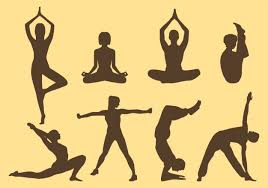

</head>

<body>
<center>Hello Everyone! Welcome to my fitness page!</center>
<link href="styles3.css" rel="stylesheet">
</body>
</html>

<center><h1> ~ I'm Sierra Dorney ~ </h1></center>

<h3> Fitness is something I value with a passion and I try to focus on everyday.
	 It's very important to take care of yourself and maintain a healthy lifestyle. 
	 Ever since I was able to play sports I have taking advantage of doing so.
	 I've participated in gymnastics, i've played soccer, field-hockey, softball, and tennis.

 <br> Before coming to college I thought it would be smart to specifically focus on my studies; therefore 
	 I didn't commit to a sports team at Umaine. Instead, I have been focusing on yoga and other workout
	 regimens.  </br>
</h3>


<p> Why is fitness important? 
	A person who is fit is capable of living life to its fullest extent. 
	Physical and mental fitness play very important roles in your lives and people who are both, 
	physically and mentally fit are less prone to medical conditions as well.</p>





<p> In case your interested more about yoga;
	Here are some types of yoga stretches and their pose types:</P>
<p> 1. Corpse Pose ~ Purporse: Restorative Yoga  </P>
<p> 2. Cow Face Pose ~ Purpose: Hip Opening Yoga & Seated Yoga  </P>
<p> 3. Cow Pose ~ Purpose: Chest Opening Yoga & Yoga Backbends <p>
<p> 4. Crane (Crow) Pose ~ Purpose: Arm Balance Yoga & Core Yoga <p>
<p> 5. Eagle Pose ~ Purpose: Balancing Yoga


<p> In the link below listed as "Yoga Video" you will find a detailed workout routine 
	for tight muscles. Not only is this video a great way to lossen up after a rigorous 
	workout but it also can relax and sooth you with deep stretching.  </p>

<nav>
<ul>

 <li><A HREF="https://www.youtube.com/watch?v=Pp8UNgkcAYs" target="_blank"> Yoga Video</A></li>
 <li> <A HREF= "index.html"> Sierra's Home Page </a> </li> 
 <li> <A HREF= "https://www.youtube.com/watch?v=RvW3mIDNY6o" target="_blank"> Why Fitness Is Important </a> </li> 

</ul>
</nav>


 
